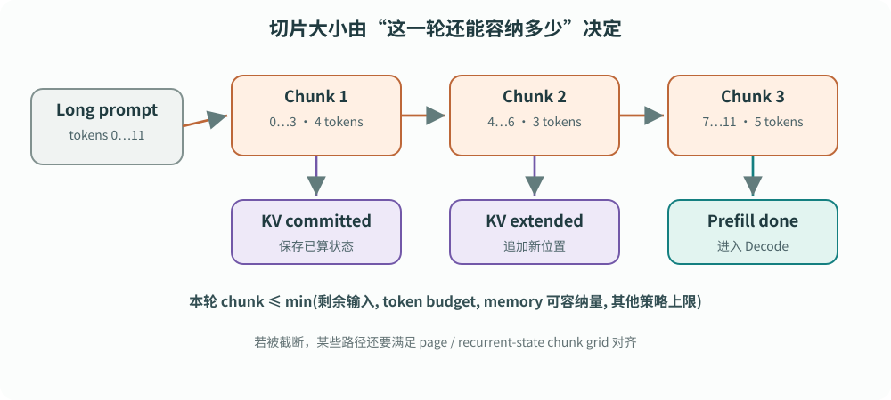
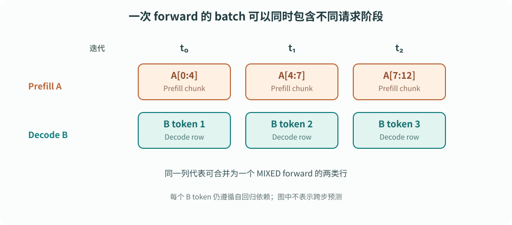

第 08 章 · Prefill 调度
Chunked Prefill：预算驱动的长 Prompt 切片与 Mixed Batch
从 PrefillAdder 的剩余预算出发，理解 chunk 为什么可变、何时继续、何时等待，以及如何和 Decode 混合。
长 Prompt 一次性进入 Prefill，可能长时间占用计算资源，也可能在高并发下消耗大量 KV slots。Chunked Prefill 将一个长输入拆成多个可调度片段；但真实 scheduler 并不是机械地每次取固定 N 个 token。它必须同时考虑剩余输入、当前 batch 的 token budget、KV memory budget、请求状态以及页或 recurrent-state 的对齐约束。
读完本章，你应该能
- 用预算上界解释本轮 chunk 大小，而不是把它当作固定切片。
- 沿 PrefillAdder 追踪 available_chunk_tokens、fit_chunk 和 continuation。
- 解释 chunked request 如何 stash，并在后续调度轮继续。
- 区分 mixed forward 与两个完全独立的 forward。
1. 为什么长 Prompt 会影响 Decode？
Prefill 处理输入 token 的多个位置；如果一条长输入占据很长的 forward，已经在生成的请求可能需要等待后续迭代。Chunked Prefill 将输入工作拆成多个片段，为调度器创造在片段之间重新组织 batch 的机会。它不是减少模型必须处理的输入 token 数，而是改变处理这些 token 的时间粒度。
官方 Server Arguments 将 --chunked-prefill-size 定义为 chunk 的最大 token 数，设为 -1 表示关闭；文档也建议长 Prompt Prefill OOM 时尝试调小它。但它只是配置上限，不代表每一轮实际 chunk 一定取这个值；是否混入 Decode、是否动态变短，仍要读当前 scheduler 实现。
2. chunk 大小是多重预算的交集
设当前请求还剩 R 个 Prompt token，本轮剩余 token budget 为 B，KV memory budget 在其他请求和缓存状态之后还能容纳 M 个 token，配置或策略 cap 为 S。一个简化的教学上界是：
这不是源码中的单一公式：实际实现通过 memory_budget.available_chunk_tokens()、fit_chunk()、chunked_req_limit、请求行与状态 slot reserve 等步骤共同决定。若需要 page 或 recurrent-state grid 对齐，截断点还可能进一步调整。

取 R=12、B=6、M=4、S=8，C≤4；若中间截断需 P=4 对齐，本轮推进4。若 R=3、B=1、M=1、S=8 且中间截断必须 P=4 对齐，则推进0，应等待而非强制取1。最终不足整页的尾部是否允许需看具体实现；CPU lab 是简化模型。
3. PrefillAdder：先算预算，再决定是否推进
当前 PrefillAdder 接收 rem_input_tokens、rem_chunk_tokens、KV allocator、prefix cache 和 mixed decode token 数。初始化时会从 token budget 中扣除 mixed decode token。继续处理 chunk 时，_add_chunked_req() 会先问 memory_budget.available_chunk_tokens()，再应用可选的 chunk limit、对齐规则和 memory_budget.fit_chunk()。
如果预算不足，返回未完成请求等待下一轮；如果算出的新长度小于剩余 Prompt，则只把这段加入 can_run_list，并更新 memory budget；如果已覆盖剩余输入，请求才完成 Prefill chunk 路径。这个过程比“切片长度恒等于配置参数”更复杂。
4. chunk 之间如何保存状态并继续？
Scheduler 通过 chunked_req 跟踪尚未完成 Prefill 的请求。当前 stash_chunked_request() 会根据部署角色保存相应 KV/checkpoint；get_next_batch_to_run() 会把正在继续的 chunked request 从上一批处理中单独处理，再在新调度步骤中安排下一段。
这不是每一段都重新发送整条 Prompt。请求的前缀长度、已经算过的 KV 和 continuation 状态都必须保持一致；否则下一段会重复计算或错位读取缓存。
5. Mixed Chunk：同一 forward 可以容纳 Prefill 与 Decode 行
当 mixed-chunk 路径启用且配置/模型约束允许时，ScheduleBatch.mix_with_running() 会将 prefill batch 与 running decode batch 合并，并将 forward mode 设为 MIXED。Decode 行贡献自己的下一 token 工作，Prefill 行贡献当前 chunk；它们在同一个 forward 中占据不同 batch row。

注意：这不是把 Decode 请求塞进 Prefill token 序列，也不是让同一条请求的未来 token 并行生成。每个 decode step 仍依赖前一轮结果。
6. 对齐与模型限制：chunk 并非随意切割
当前 PrefillAdder 会在特定路径中处理 page alignment、KV shard granule 与 Mamba/recurrent-state chunk grid；如果一个 chunk 被截短，还要避免切在无法保存/恢复状态的位置。Scheduler 初始化时还会在 multimodal + Transformers backend 的特定组合下禁用 chunked prefill，以避免部分多模态 chunk 不匹配。
所以不要把“所有 chunk 都必须等于 page_size 的倍数”或“所有多模态模型都支持任意切片”写成通用结论。必须将对齐条件限定到具体 allocator、模型和执行后端。
7. 交互：预算变化如何改变 chunk 长度？
下面使用一个纯教学预算，不复刻 SGLang 的完整 PrefillBudget。
本轮预算变化
轮次 1 · 可用 4：剩余 Prompt 12；token budget 6；memory 可容纳 4；本轮最多处理 4 个 token。
轮次 2 · 可用 3：剩余 Prompt 8；token budget 5；memory 可容纳 3；本轮 chunk 缩小为 3。
轮次 3 · 剩余 5：剩余 Prompt 5；token budget 8；memory 可容纳 6；本轮处理剩余 5，Prefill 完成。
这个 toy 例子说明 chunk 长度可以随每轮资源变化而变化，不代表线上调度一定按 4/3/5 运行。可以运行 examples/chunk_budget.py 检查预算上界和非最终 chunk 的对齐边界。
8. 如何判断 chunking 是否真的改善服务？
需要同时观察 TTFT、ITL/TPOT、P95/P99、Prefill queue time、Decode queue time、KV cache occupancy、GPU 利用率和失败率。更小的 chunk 可能让 Decode 更及时得到调度，却也增加调度轮数与 metadata 开销；更大的 chunk 可能提高 Prefill 效率，却增加单轮占用和 KV 峰值。必须在相同模型、硬件、输入输出长度分布和到达率下比较。
本章图示没有给出任何性能数字。下一章将追踪 attention backend 如何接收 request table 与 KV page mapping，最终让 kernel 读取正确的 K/V。
参考资料与版本边界
实现级描述以 sgl-project/sglang@6a4e10a0ee643dfbe5f59a98b60293bc11fc1bdd 为快照（2026-11-23 核查）。源码 main 后续会变化；新版本需要重新核对调用路径、默认配置和兼容矩阵。图中页号、chunk 数值和概率向量均为 toy/derived，不是性能测量。